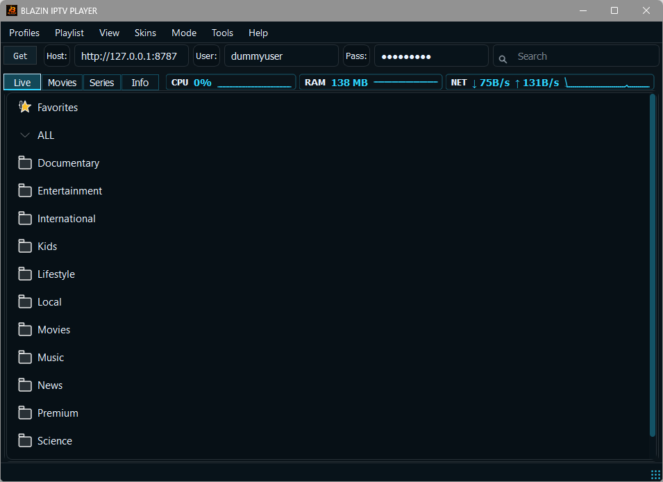

Live TV, Movies, and Series
BLAZIN separates supported content into practical sections when your source provides that structure, making it easier to move between live channels, movie lists, and series entries.
BLAZIN IPTV Player is built for Windows users who want one desktop app for the legal IPTV source they already have. Load M3U playlists, M3U Plus URLs, Xtream Codes, STB MAC, or Stalker Portal details, then browse Live TV, Movies, Series, categories, EPG, artwork, search, and favorites in a Windows-first workflow.
Why BLAZIN exists
Opening a single stream is easy. Managing a full IPTV source on a Windows laptop or desktop is different. You need source profiles, categories, search, favorites, guide data, artwork, and playback controls that stay comfortable on a PC screen. BLAZIN IPTV Player focuses on that everyday Windows workflow.
Instead of forcing every source into one generic box, BLAZIN gives you dedicated setup paths for the most common user-provided source types. The app is designed for people who already have legal playlist or portal details and want a cleaner way to load, browse, and play that source on Windows 10 or Windows 11.

Source support
Many Windows IPTV apps only feel useful with one type of playlist. BLAZIN is designed around flexibility so you can test the source type your legal provider or playlist actually gives you.
| Source type | What you enter | How BLAZIN helps on Windows |
|---|---|---|
| M3U file | A local playlist file saved on your PC. | Open the file directly and browse the channels or sections contained in the playlist. |
| M3U URL / M3U Plus | A remote playlist address supplied by your legal source. | Load the URL, organize returned categories, and test Live TV, Movies, Series, logos, and guide data where available. |
| Xtream Codes | Server URL, username, and password. | Use a dedicated login workflow for sources that expose Live TV, VOD, Series, EPG, and artwork through compatible data. |
| STB MAC | Portal URL and MAC-style login details. | Use a Windows player workflow for STB-style sources without needing to use a separate set-top box interface. |
| Stalker Portal | Portal details plus optional compatibility settings. | Use custom user agent and advanced Stalker/STB fields when your legitimate source requires more specific compatibility values. |
Daily browsing
BLAZIN separates supported content into practical sections when your source provides that structure, making it easier to move between live channels, movie lists, and series entries.
Large playlists can be slow to navigate without organization. BLAZIN gives you category browsing, search, and favorites so the items you use most are easier to reach.
Program guide data, channel logos, movie posters, and series artwork are displayed when your source supplies compatible metadata. BLAZIN does not create or provide that content.

Playback control
BLAZIN is not limited to a single playback habit. Use the internal player for a compact in-app setup, or configure external player workflows such as VLC, MPC-HC, or MPC-BE when that is how you prefer to watch on Windows.
This matters for real desktop use. Some users want everything inside one window. Others already have a preferred media player, decoder setup, display output, or remote-control workflow. BLAZIN gives you a practical way to test both during the 7-day trial.
Built for tricky sources
Some legal sources expect a specific user agent for requests or playback. BLAZIN includes custom user agent settings so advanced users can test the value their source requires instead of being locked into one default behavior.
Stalker and STB-style sources can vary. BLAZIN includes advanced fields such as device, version, and portal compatibility options so legitimate users have more control when a source expects detailed STB-style values.
Who it is for
If you switch between M3U, Xtream Codes, STB MAC, or Stalker Portal workflows, BLAZIN keeps those options in one Windows-focused app.
Search, favorites, and categories help when your source contains many channels, VOD items, or series entries.
Use a native Windows app instead of forcing your IPTV workflow through a browser page, emulator, or mobile-first interface.
7-day trial checklist
FAQ
No. BLAZIN IPTV Player is player-only software. Users must provide their own legal IPTV source.
You can test M3U files, M3U URLs, M3U Plus, Xtream Codes, STB MAC, and Stalker Portal workflows when you have your own legal source details.
BLAZIN can display EPG, logos, posters, Live TV, Movies, Series, and categories when that compatible data is supplied by the user’s source.
Yes. BLAZIN includes an internal player and supports external player workflows such as VLC, MPC-HC, and MPC-BE.
Yes. BLAZIN IPTV Player offers a 7-day free trial through Microsoft Store.
Related guides
Compare the features that matter before choosing a Windows IPTV player.
Learn how BLAZIN handles local playlist files, remote M3U URLs, and M3U Plus workflows.
Use server URL, username, and password details from your own legal source.
Microsoft Store
Install the Windows app, add your own legal IPTV source, and test the supported workflow on your own PC before deciding.
No channels, playlists, subscriptions, provider accounts, streams, or copyrighted content are included.